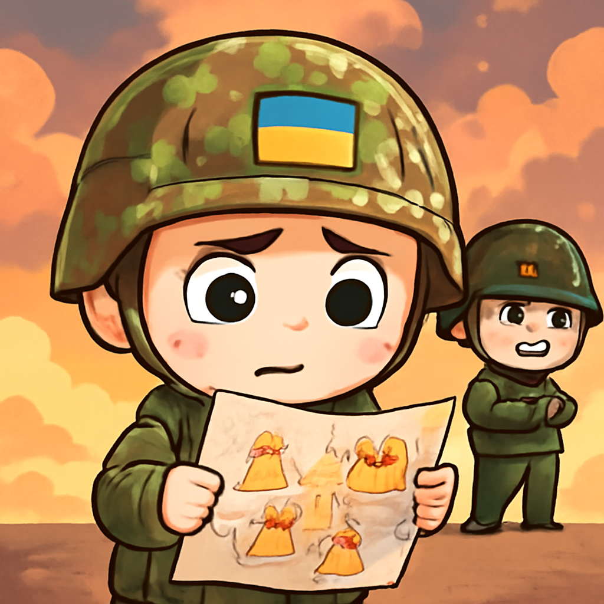
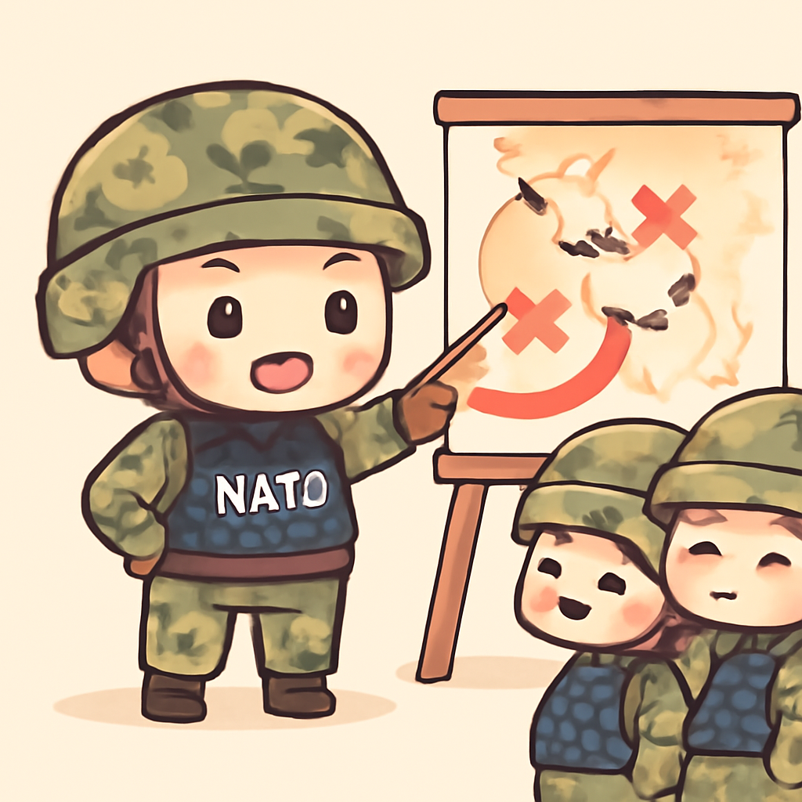

其一 · 烏克蘭基輔 · 俄國持續攻擊能源設施
烏克蘭指控俄國繼續襲擊能源站

在烏克蘭基輔，儘管美國總統特朗普宣布不攻擊能源基礎設施，烏克蘭仍報告六處能源設施遭到攻擊，造成廣泛影響。這顯示出俄方無視外交努力的態度，讓局勢更加緊張。希望這不會成為新一輪的能源戰。
🔗 原始新聞 ↗
2026-10-13 · 以古觀今，以笑抗愁
烏克蘭指控俄國繼續襲擊能源站

在烏克蘭基輔，儘管美國總統特朗普宣布不攻擊能源基礎設施，烏克蘭仍報告六處能源設施遭到攻擊，造成廣泛影響。這顯示出俄方無視外交努力的態度，讓局勢更加緊張。希望這不會成為新一輪的能源戰。
🔗 原始新聞 ↗
沙特對侯塞伊的襲擊表示強烈回應
沙烏地阿拉伯利雅德，侯塞伊武裝組織對當地國際機場發動襲擊，造成13人遇難，沙特政府表示將給予「嚴重回應」。這次攻擊不僅影響了當地的安全情勢，還可能引發更大範圍的地緣政治緊張，讓周邊國家不安。希望他們的回應不是像電影裡的爆炸場景。
🔗 原始新聞 ↗
南非副警察局長面臨性犯罪指控
在南非約翰尼斯堡，副警察局長沙德拉克·西比亞因涉嫌性犯罪辭職，並否認對兩名年輕女性的指控。這事件不僅損害了當地執法機構的形象，也加劇了社會對性犯罪的關注。希望這能引發更多的反思，讓社會對性別暴力說不！
🔗 原始新聞 ↗
印度首都遭遇抗議潮，民眾聲音高漲
在印度新德里，反對派群體於週一進行大規模抗議，這次抗議是針對最近的封鎖措施和大規模逮捕。民眾的情緒高漲，顯示出對政府的不滿。這場抗議可能會引發更大的政治變化，讓政府不得不重新思考其政策方向。希望他們沒有用「封鎖」來阻止「抗議」的創意。
🔗 原始新聞 ↗
北約發布新計畫應對俄國威脅

在比利時布魯塞爾，北約公布了一項新計畫，旨在保護歐洲盟國免受俄國的網路攻擊和其他潛在威脅。隨著局勢緊張，這項計畫顯得尤為重要，顯示出歐洲國家對安全的重視。希望這能讓俄國知道，大家不是隨便能欺負的！
🔗 原始新聞 ↗